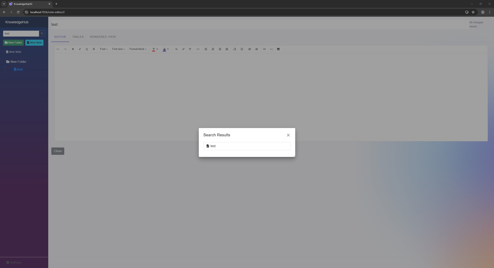

Welcome to KnowledgeHubV2! This guide will walk you through the main features of the application and how to use them.
KnowledgeHubV2 is a file-based application that runs in your browser. All your data is stored locally on your computer.
When you first launch the application, you will be presented with two choices:
.db file and resume your session.The interface is divided into a few key areas:
You can create new folders and notes to organize your information.
Clicking on a note in the File Explorer opens it in the Note Editor. The editor provides standard rich-text formatting options, such as:
You can embed structured data tables directly within your notes.
One of the powerful features of KnowledgeHubV2 is the ability to display calculations from your tables directly in your notes. You can insert a reference into your note content using the following format:
{{TableName.ColumnName.Aggregate}}
TableName: The name of the table you want to reference.ColumnName: The name of the column you want to calculate from. This must be a 'Number' type column for most calculations.Aggregate: The calculation to perform. Can be sum, avg (average), or count.Example: If you have a table named "Expenses" with a "Cost" column, you can display the total cost anywhere in your note by writing: Total: {{Expenses.Cost.sum}}. The application will automatically replace this with the calculated value.
You can easily reorganize your knowledge base by dragging and dropping notes and folders in the File Explorer.
You can search for notes using the search bar in the top menu. The results will be displayed in a dialog.
Your data is held in your browser's memory during your session. It is critical to save your work before closing the browser tab.
.db file with your latest changes.Separate from the main database file, you can export your data to a human-readable JSON format (.khb file), which is useful for backups or migrating data.
.khb extension, while encrypted files will be saved with a .khb-enc extension..khb or .khb-enc file. Warning: Importing will completely overwrite all data in your currently open database.